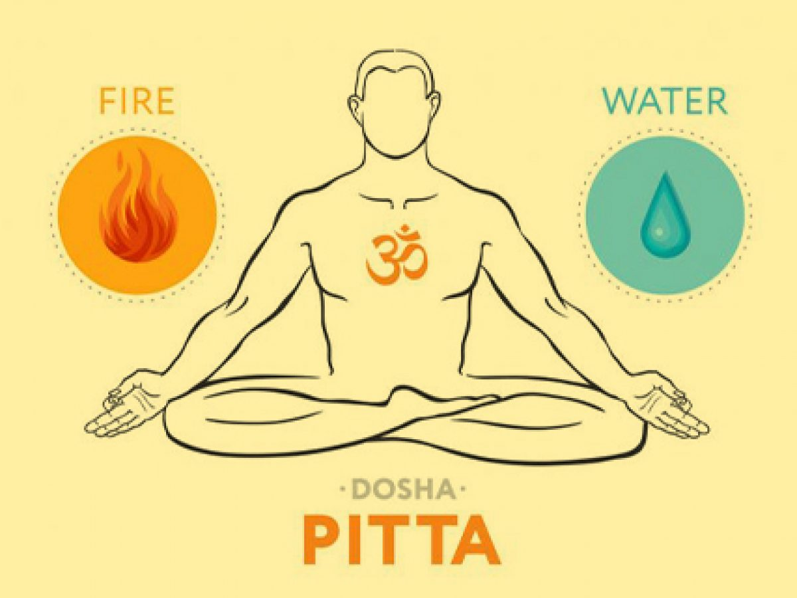

Pitta Dosha is made of fire and water. It controls digestion, body temperature, and energy.
When Pitta is balanced, you feel focused, strong, and confident. If it’s out of balance, it can
cause anger,overheating, heartburn, or skin rashes.
Tips for Balancing Pitta Dosha
Foods to Cut down from Diet:
Very salty,spicy,sour foods,eggs and meat.
Foods to consume to Balance Pitta dosha:
Sweet and Bitter foods.
Always use Mishri(Rock Sugar),Desi Khand and Jaggery instead of refined sugar.
Also eat fruits with high water content.
Yoga Asanas to Balance Pitta Dosha:
1.Sarvanga
2.Pranayam:Kapalabharti

3.Pranayam:Anulom Vilom